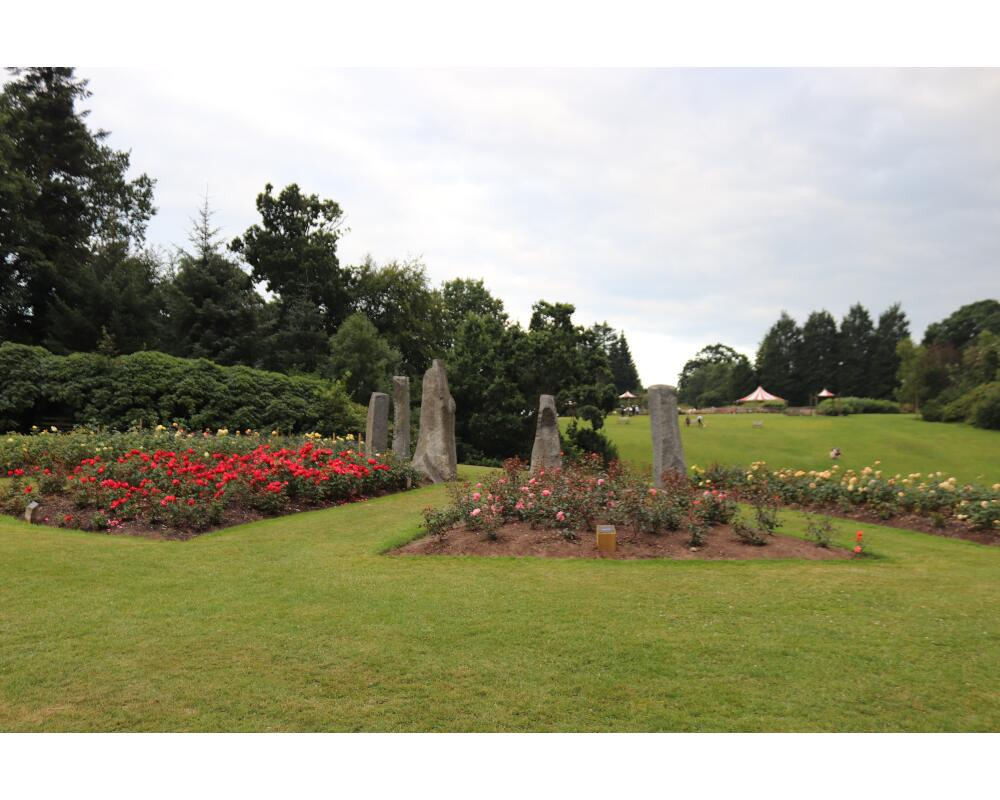
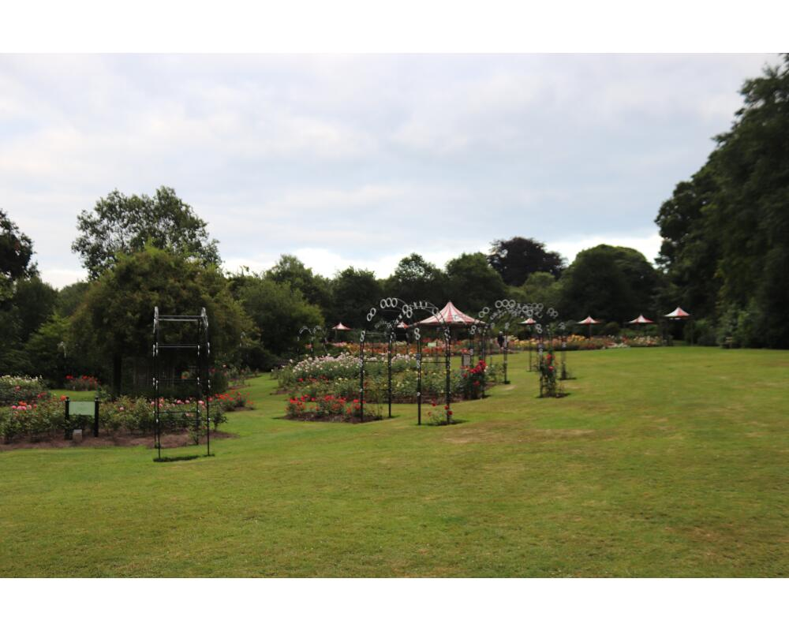

Lady Dixon Park is a nice flat walk which takes in the gardens and woodlands.Visit this park in the summer and you'll witness the annual rose festival.
This gentle stroll takes in the rose garden. From the car park, take the main road to the house. Once at the house (with it facing you), take the right side of the house. Here you will find the rose gardens. These are well signposted and you can take a walk through to admire the roses. Head back to the house and continue past the house. Take the path to the right and this will take you to the walled garden. The garden is a nice pleasant walk. After you have finished exploring the garden head back the way you came.
Lady Dixon Park has a back entrance which is accessed from Dunmurry Lane. Follow this path from the entrance, with the woodland to your left. Once up the second hill (ok I lied, the park isn't completely flat!), take the path to the right. Keep to this path which takes you through the forest.Eventually you will reach the canal. Keep the canal to your right and continue along the path until you get to a council depot. Then take the path to your left. This will take you to a kids playpark. Go through the playpark to the other side. Take up the path to the house. Follow this road right around the park, the gardens will be on your left. Just before you reach a small house located at the entrance gate, take the path to the left. Keep to this path, where you will have open park land and the gardens to the left and woodland to the right. Eventually this path will take you back to the path you entered the park in. Take a right and this will take you back to the entrance at Dunmurry Lane.
